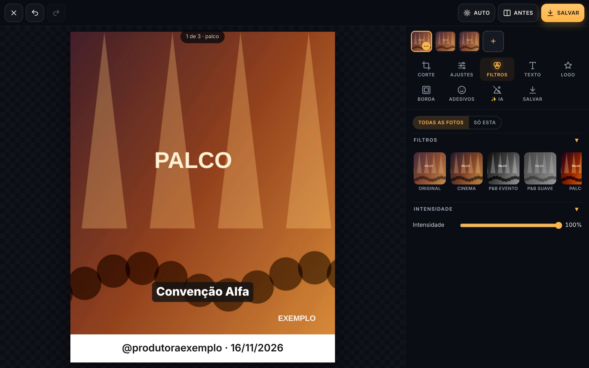
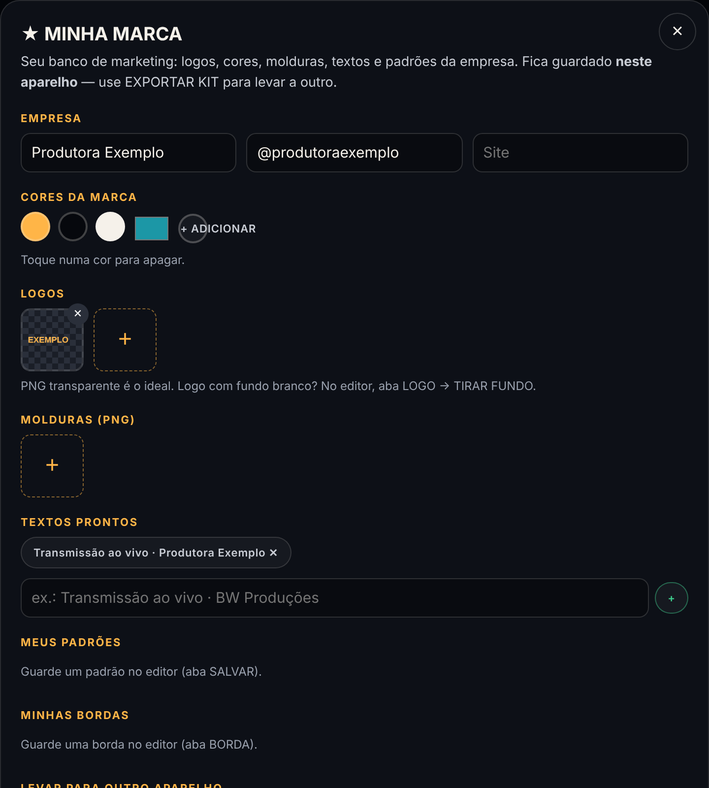

Toque na foto aberta (a miniatura com ⋯) para substituir, duplicar, mover, copiar a edição para todas ou excluir. Cada seção do painel abre e fecha pela seta ▾.
Nome da empresa, @, site, cores, logos, molduras, textos prontos, meus padrões (tudo de uma vez: formato, ajustes, texto, logo e borda) e minhas bordas. Fica guardado neste aparelho; use EXPORTAR KIT e IMPORTAR KIT para levar ao celular ou ao computador.